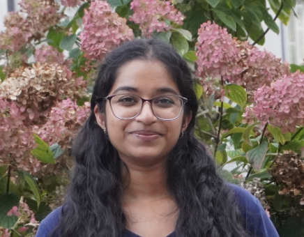
Co-President - Pratyusha Mandal
Biomedical Engineering ’27
Email: pm634@cornell.edu
Hometown: Rockville, MD
Why I joined SWE: I joined SWE because I had a passion for giving back to the community and also for the opportunities that SWE presented. I appreciate the ability to help a community within engineering have a solid path to their future interests and jobs. SWE has also provided me with leadership opportunities to work within a community and outreach to younger women interested in science and engineering.
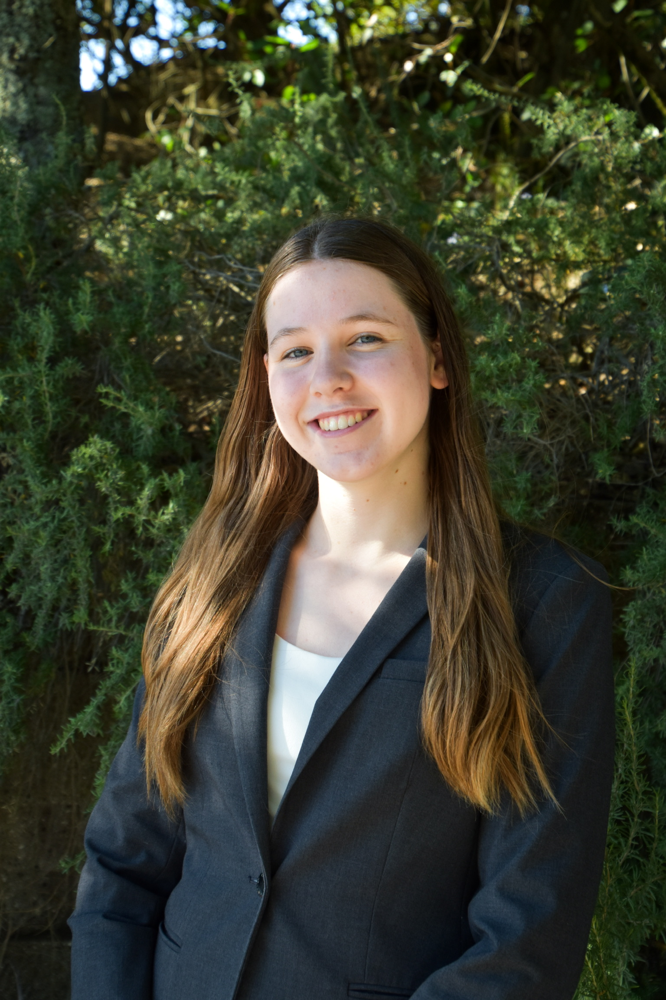
Co-President - Kaitlyn Roach
Biomedical Engineering '27
Email: ker238@cornell.edu
Hometown: Orinda, CA
Why I joined SWE: I decided to join SWE because I wanted to find a community within engineering. SWE was able to help me connect with other students and learn about new opportunities.
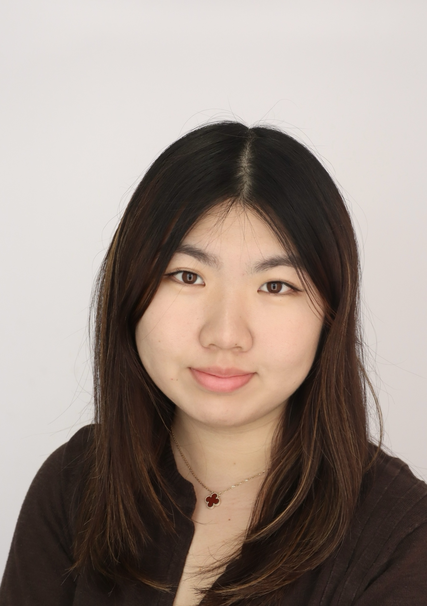
Senior Finance Chair - Dora Zhang
Computer Science '28
Email: dz366@cornell.edu
Hometown: San Diego, CA
Why I joined SWE: I joined SWE because I was seeking a community of like-minded, driven peers to grow alongside. Having experienced what it’s like to be a minority in the field of engineering, I wanted to contribute to making STEM more inclusive and equitable for future generations.
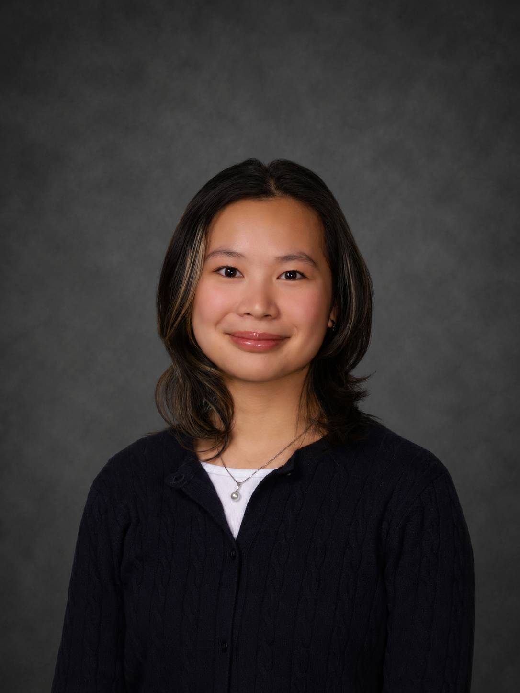
Junior Finance Chair - Madison Li
Chemical Engineering ‘28
Email: ml2825@cornell.edu
Hometown: Newton, MA
Why I joined SWE: I wanted to join SWE to meet women in other engineering disciplines and to connect with others who share my passion for science. I also wanted to promote engineering education for young girls and be a part of a greater mission to inspire young female engineers!
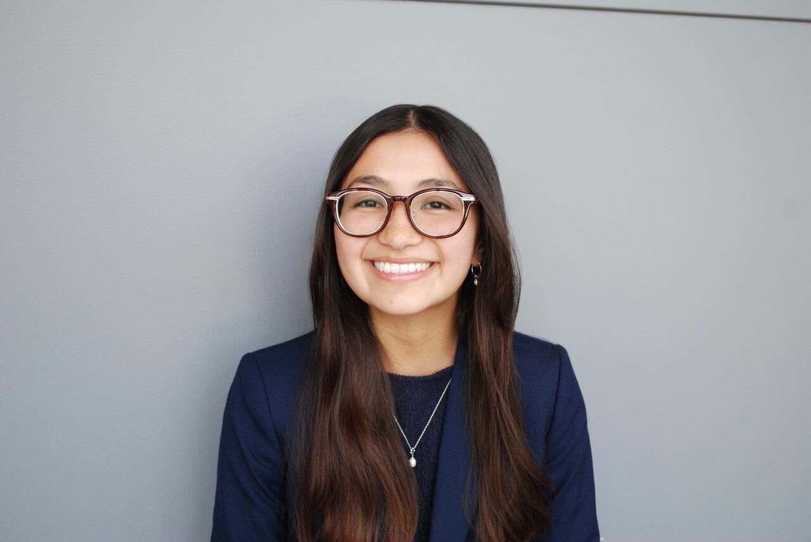
Fundraising Co-Director - Kylie Kaneshigee
Chemical Engineering ’27
Email: kjk245@cornell.edu
Hometown: Dallas, TX
Why I joined SWE: I wanted to connect with other women in engineering outside of the classroom. I felt like too often my friendships were based out of the classroom, but finding those connections outside of class helps foster better relationships.
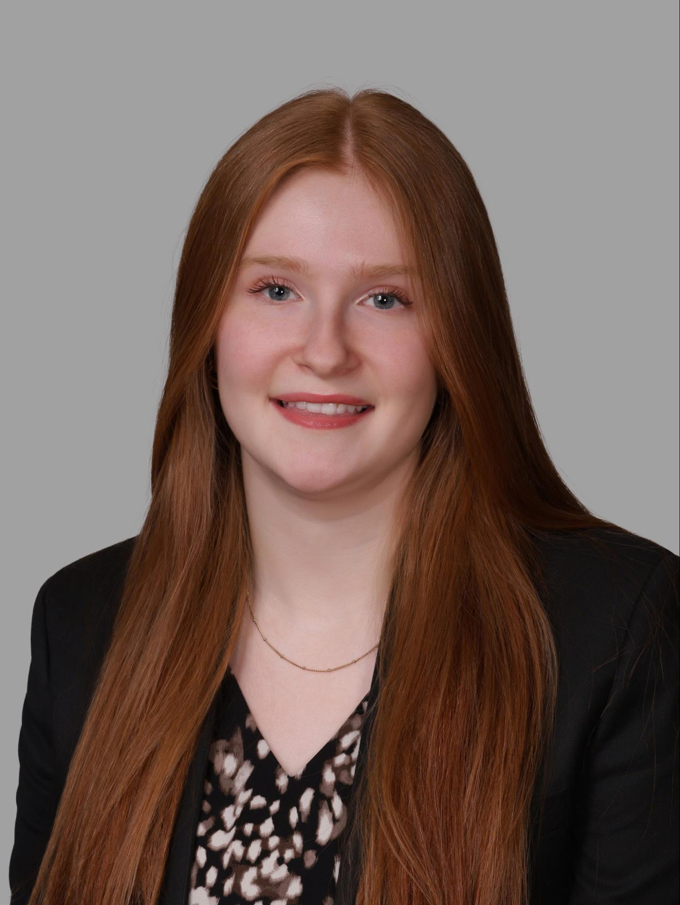
Fundraising Co-Director - Elizabeth Kline
Chemical Engineering ’28
Email: elk92@cornell.edu
Hometown: Harleysville, PA
Why I joined SWE: I joined SWE to be part of a community that empowers women in engineering and encourages us to support one another. I’ve loved meeting women who share my passion for engineering, building meaningful connections, and growing together both personally and professionally.
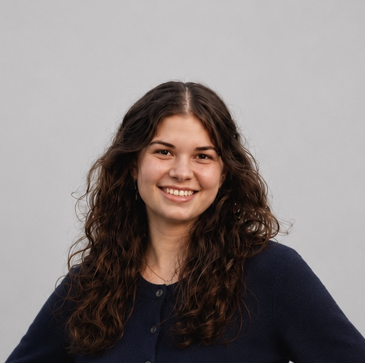
Outreach Co-Director - Amanda Rundell
Mechanical Engineering ’29
Email: amr473@cornell.edu
Hometown: Clifton Park, NY
Why I joined SWE: Being a part of SWE in high school encouraged me to pursue engineering as a career. I joined SWE to empower young engineers and find a community at Cornell.
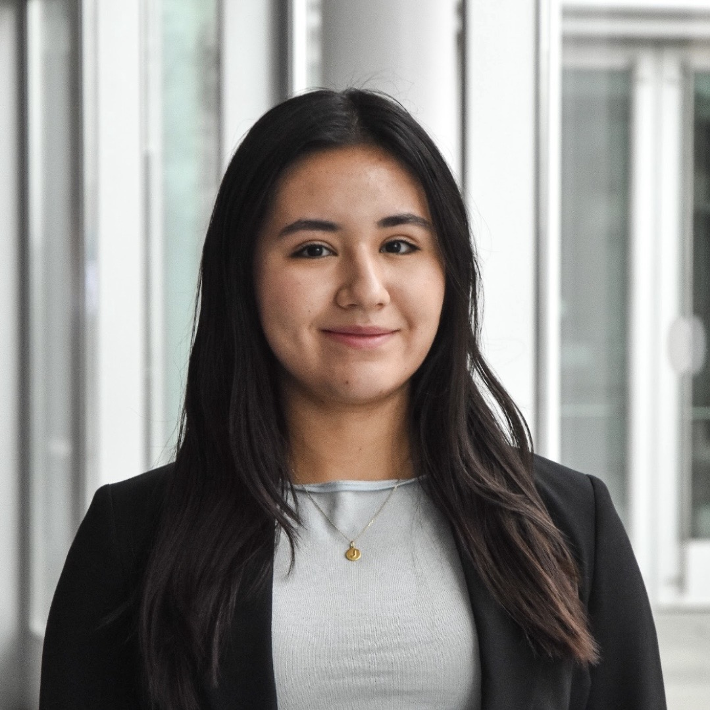
Outreach Co-Director - Jackie Antelo
Mechanical Engineering ‘28
Email: ja866@cornell.edu
Hometown: Port Jefferson Station, NY
Why I joined SWE: Engaging with SWE and similar organizations during high school encouraged me to pursue engineering as a career. I joined SWE to do the same for aspiring young engineers today!
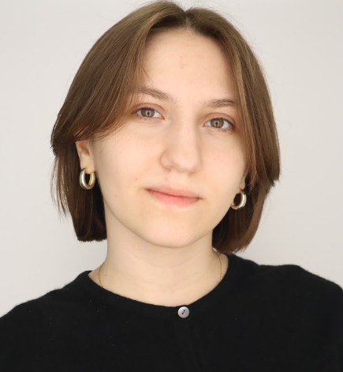
Senior Corporate Relations Director - Isabella Sabatino
its8@cornell.edu
Email: mk2425@cornell.edu
Hometown: Lansdale, PA
Why I joined SWE: I wanted to participate in the organization that helped inspire me to do engineering in high school and continue to do the same for others. I was looking for a community that was geared towards helping women in engineering navigate their major and future careers.
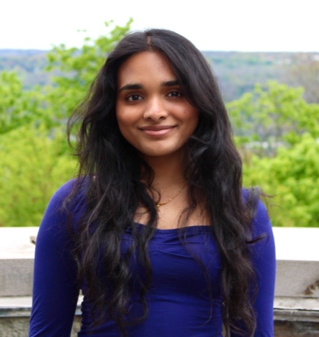
Junior Corporate Relations Director - Ananya Karunakaram
Mechanical Engineering ‘29
Email: ak2778@cornell.edu
Hometown: Herndon, VA
Why I joined SWE: I joined SWE to get a community of like-minded women who share my passion for engineering and aspire to make a meaningful impact in the field, while supporting and learning from each other along the way.
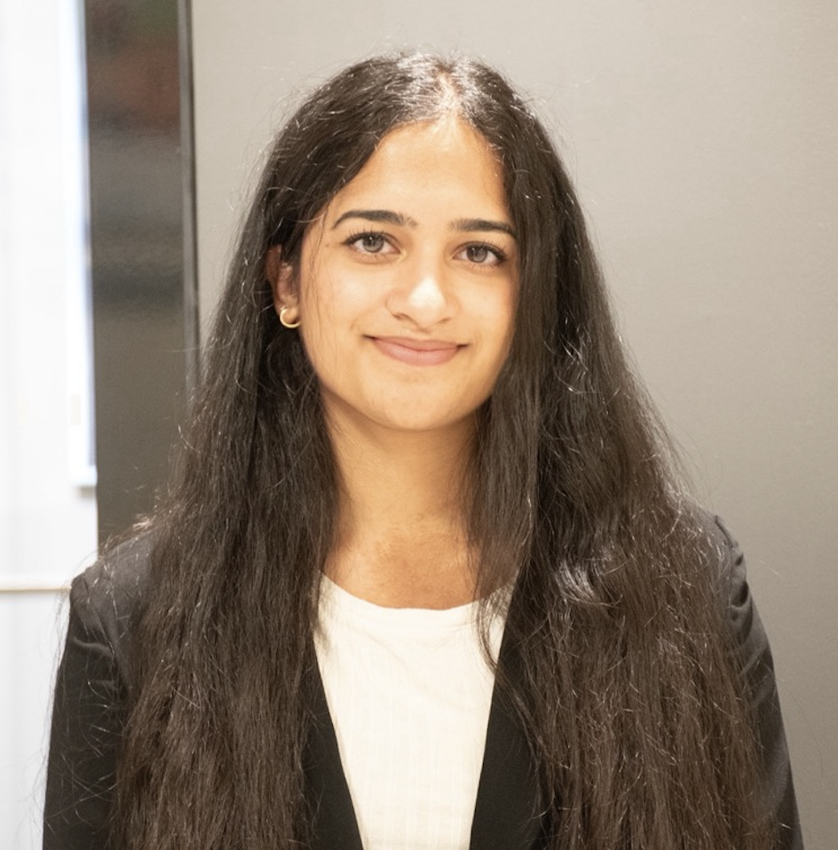
Career Development Co-Director - Bhavya Anoop
Chemical Engineering '27
Email: ba436@cornell.edu
Hometown: Cleveland, OH
Why I joined SWE: I joined SWE to be a part of a supportive community of women in engineering. Being a part of SWE has allowed me to meet other women in STEM, advocate for inclusivity in the field, and foster both my own and others’ professional growth. More specifically, as someone passionate about career growth and professional development, I was drawn to the Career Development Committee.
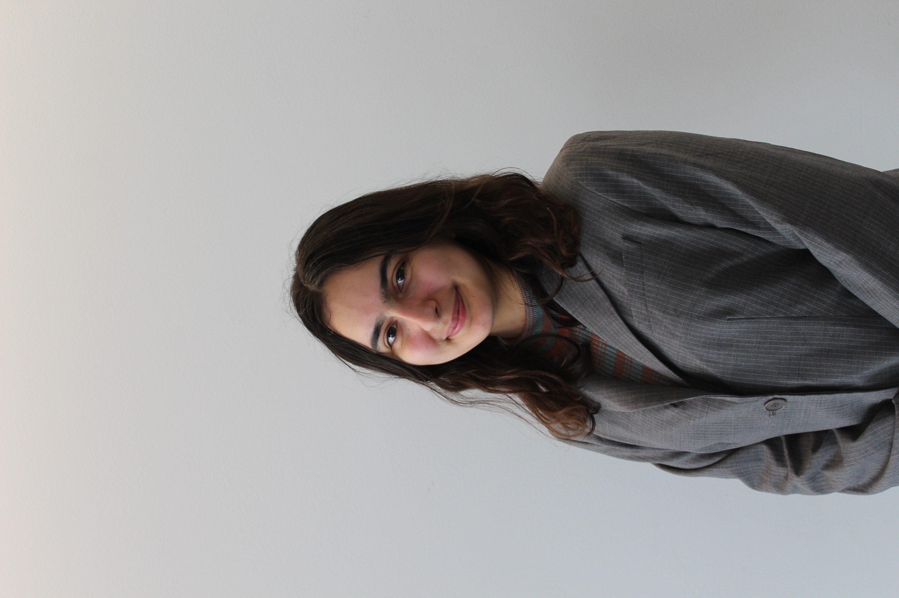
Career Development Co-Director - Natalie Shepherd
Biomedical Engineering '27
Email: nms225@cornell.edu
Hometown: Brookline, MA
Why I joined SWE: I joined SWE because it creates a unique space to connect with and mutually support other women engineers. I loved SWE's mission and wanted to further is positive impact on the Cornell community. More specifically, I have enjoyed working on the career development committee to make career resources more available to Cornell students.
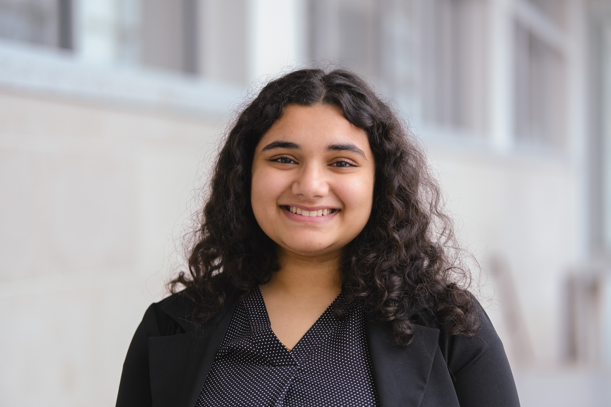
Student Services Co-Director - Esha Shah
Computer Science '27
Email: es999@cornell.edu
Hometown: Paramus, NJ
Why I joined SWE: I wanted to be part of a supportive group of women in STEM that I can both learn from and grow with!
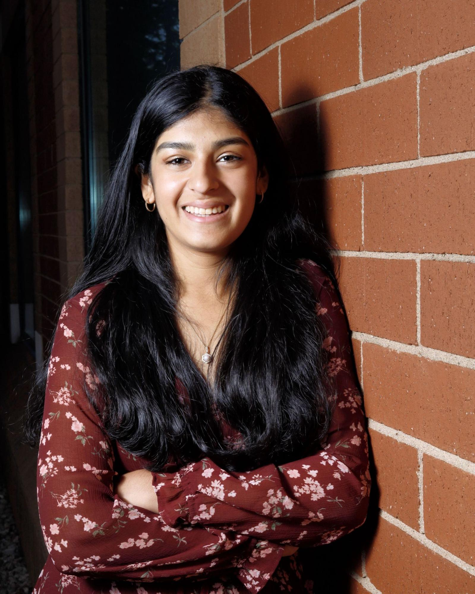
Student Services Co-Director - Anaya Pandya
Biological Engineering ’28
Email: ap2449@cornell.edu
Hometown: Fishkill, NY
Why I joined SWE: I joined SWE because I wanted to be a part of the movement that uplifts, educates and inspires women in STEM. And join a community of hard working, smart, and amazing women in engineering.
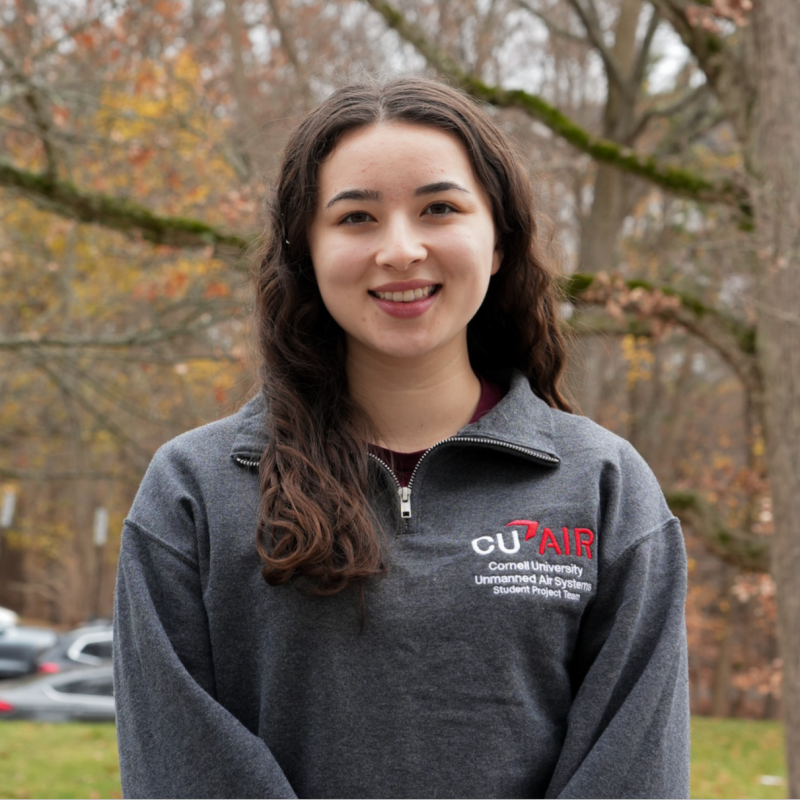
Communications Co-Director - Allison Newman
Mechanical Engineering ’28/p>
Email: akn47@cornell.edu
Hometown: Monterey Park, CA
Why I joined SWE: As a Freshman, I was looking forward to making more friends with similar ambitions and who I could collaborate with to make an impact for other women in engineering.
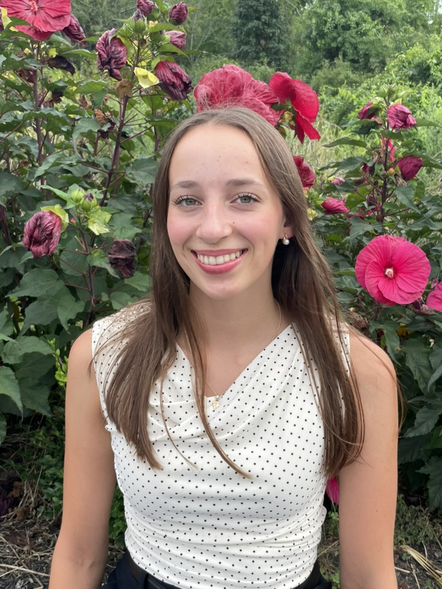
Communications Co-Director - Anna Voronova
Chemical Engineering ‘28
Email: asv44@cornell.edu
Hometown: Sharon, MA
Why I joined SWE: I joined SWE because I wanted to be part of a supportive community of ambitious women in engineering. SWE’s mission of empowering women, fostering professional growth, and creating a more inclusive STEM community resonates with me. I hope to contribute to SWE’s positive impact on the Cornell community while developing the skills and connections to continue supporting and inspiring future women in STEM!
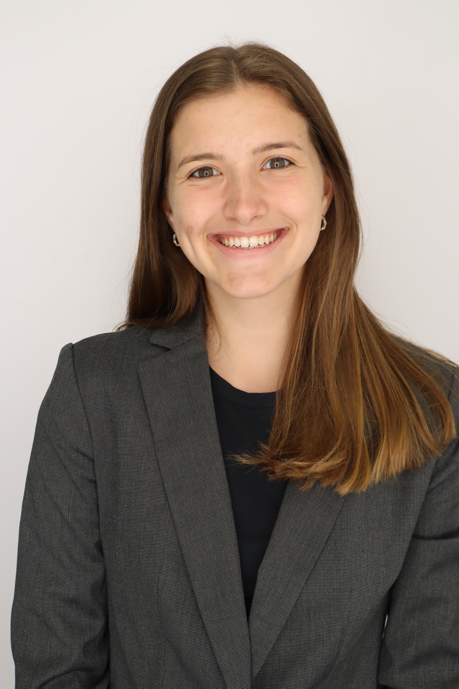
Conference Co-Director - Courtney Candy
ORIE '26
Email: cec345@cornell.edu
Hometown: Middletown, DE
Why I joined SWE: To build my community within Engineering with awesome women!
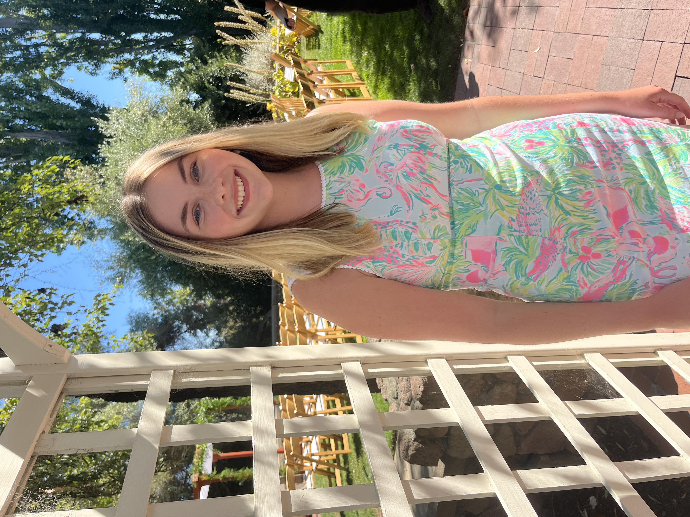
Conference Co-Director - Isabel Berkenblit
Civil Engineering '26
Email: ib294@cornell.edu
Hometown: Sharon, MA
Why I joined SWE: To find a community of supportive, empowered, and driven peers.